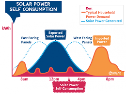

<link rel="import" href="../../bower_components/polymer/polymer.html">
<link rel="import" href="../../bower_components/iron-flex-layout/iron-flex-layout.html">
<link rel="import" href="../../bower_components/paper-material/paper-material.html">
<link rel="import" href="jquery.min.js">
<script src="https://ajax.googleapis.com/ajax/libs/jquery/3.1.1/jquery.min.js"></script>


<dom-module id="project1-view">
<template>


<style is="custom-style">
  .flex-horizontal-with-ratios {
    @apply(--layout-horizontal);
	 @apply(--layout-justified);
	 @apply(--layout-wrap);
  }
  .flexchild {
    @apply(--layout-flex);
	@apply(--layout-wrap);
  }
  .flex2child {
    @apply(--layout-flex-2);
	@apply(--layout-wrap);
  }
  .flex3child {
    @apply(--layout-flex-3);
	@apply(--layout-wrap);
  }
  
</style>
<style>
#handle1 .rs-handle  {
    background-color: transparent;
    border: 8px solid transparent;
    border-right-color: black;
    margin: -6px 0px 0px 14px !important;
    border-width: 6px 104px 6px 4px;
}
#handle1 .rs-handle:before  {
    display: block;
    content: " ";
    position: absolute;
    height: 22px;
    width: 22px;
    background: black;
    right: -11px;
    bottom: -11px;
    border-radius: 100px;
}
#handle1 .rs-tooltip  {
    top: 75%;
    font-size: 11px;
}
#handle1 .rs-tooltip div  {
    text-align: center;
    background: orange;
    color: white;
    border-radius: 4px;
    padding: 1px 5px 2px;
    margin-top: 4px;
}
#handle1 .rs-range-color  {
    background-color: #DB5959;
}
#handle1 .rs-path-color  {
    background-color: #F0C5C5;
}
</style>
<div style="padding:10px">

<div class="container flex-horizontal-with-ratios" >

<paper-material>
  <div class="flex3child" style="background-color:white;height:180px;width:300px"><center><h2>Total Energy<br> 663KW</h2></center></div></paper-material>
  <paper-material>
  <div class="flexchild" style="background-color:white;height:180px;width:500px"></div></paper-material>
  </div>
<br>

<div class="container flex-horizontal-with-ratios">
<paper-material>

  <div id="handle1" class="flex3child" onload="changeTooltip(e)" style="background-color:white;height:180px;width:300px"></div></paper-material>
  <paper-material>
  <div class="flexchild" style="background-color:white;height:180px;width:300px">two</div></paper-material>
  <paper-material>
  <div class="flex2child" style="background-color:white;height:180px;width:300px">three</div></paper-material>
</div>

<br>

<div class="container flex-horizontal-with-ratios" >
<paper-material>
  <div class="flex3child" style="background-color:white;height:100px;width:400px">one</div></paper-material>
  <paper-material>
  <div class="flexchild" style="background-color:white;height:100px;width:400px">two</div></paper-material>

 </div>

</div>
</template>
<script>
    Polymer({
      is:'project1-view',

      properties: {

	  },
	  roundSlider:function(){
		sliderType: "min-range";
		editableTooltip: false;
		radius: 105;
		width: 16;
		value: 75;
		handleSize: 0;
		handleShape: "square";
		circleShape: "pie";
		startAngle: 315;
		tooltipFormat: "changeTooltip";
	  },
	  changeTooltip:function(e){
		var val = e.value, speed;
		if (val < 20) speed = "Slow";
		else if (val < 40) speed = "Normal";
		else if (val < 70) speed = "Speed";
		else speed = "Very Speed";

		return val + " km/h" + "<div>" + speed + "<div>";
	  }
        });
		
		</script>
</dom-module>